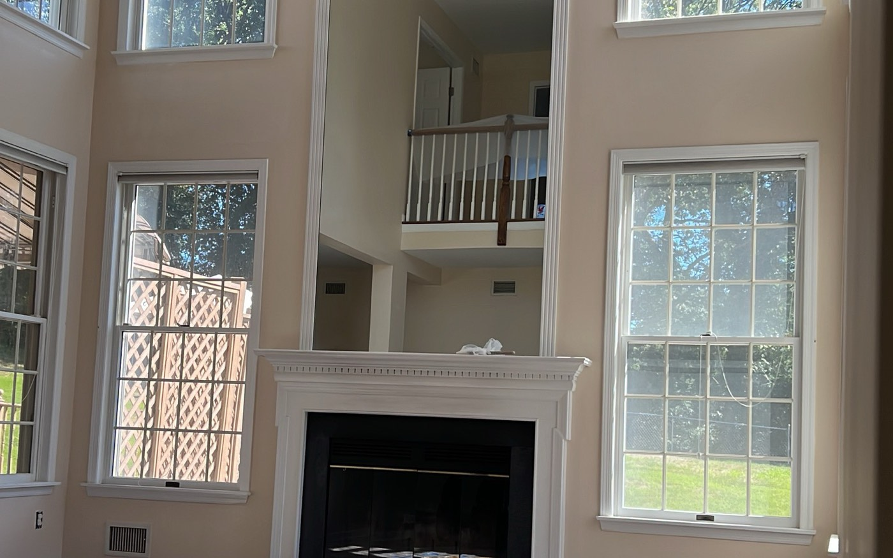

Interior Painting
Living rooms, bedrooms, hallways, kitchens, bathrooms, basements and ceilings. We patch nail holes and cracks, caulk the trim, sand where it matters and cut clean lines, then protect your floors and furniture for the whole job.
- Walls, ceilings, trim, doors and closets
- Drywall patching, caulking and priming included
- Accent walls and color consultations
- Popcorn ceiling repaint and basement walls
- Furniture covered, hardware removed and refit